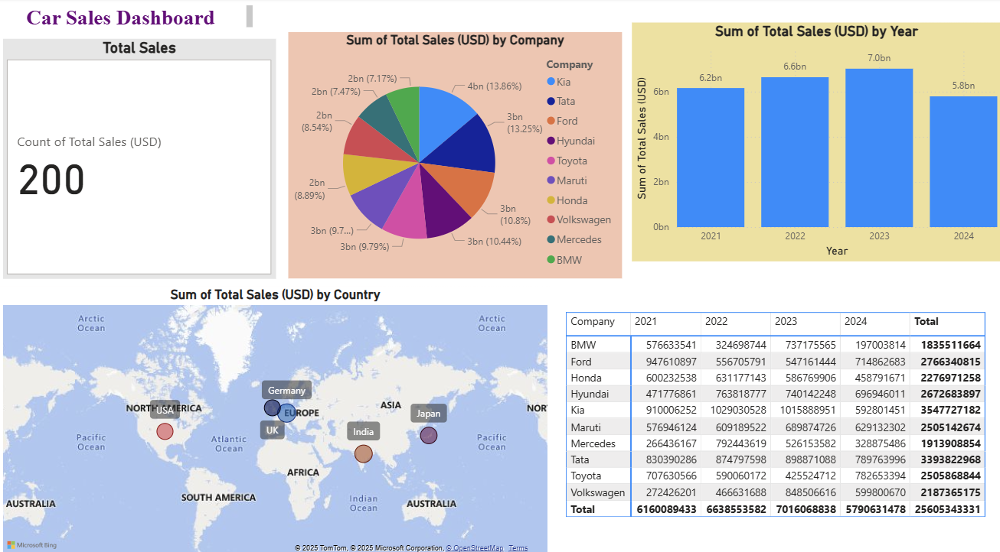
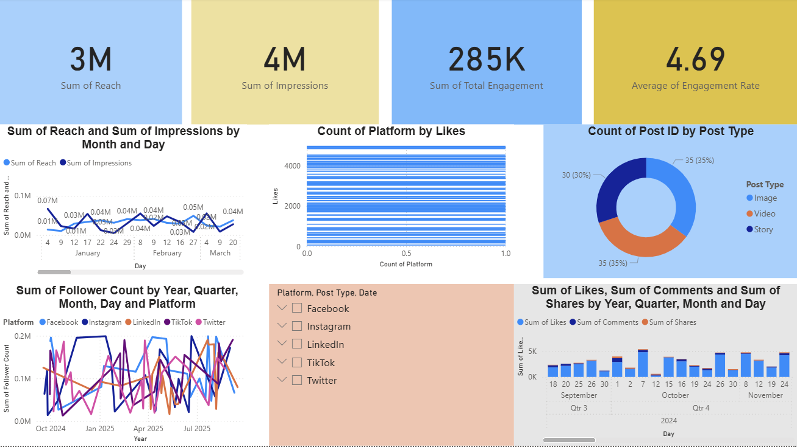
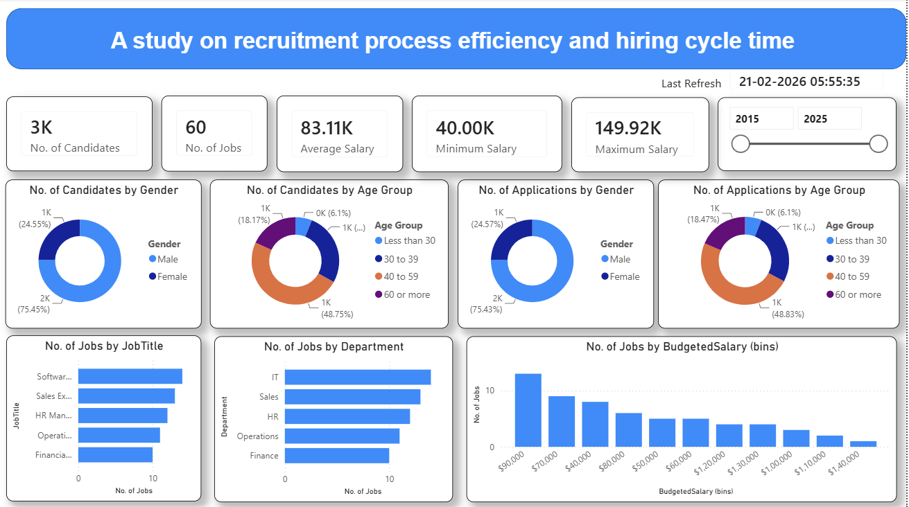
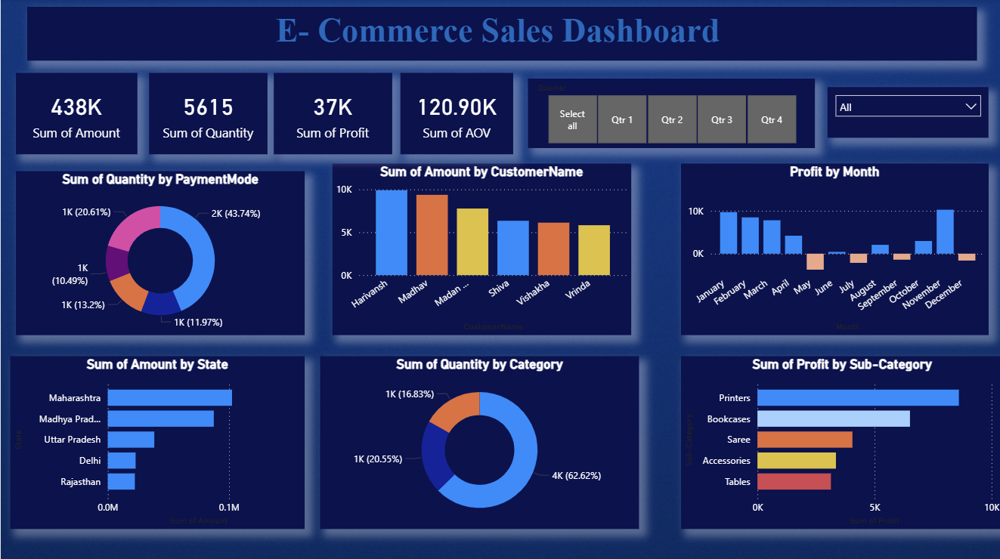

I am interested in using data to understand business performance, identify trends, and support better decision-making through analytics and visualization.
My academic background, skills and career interests.
I am currently pursuing a PGDM in Business Analytics after completing my B.Com in Business Analytics.
I am interested in using data to understand business performance and support decision-making.
I have developed skills in Power BI, Advanced Excel, data visualization, and data analysis, with practical experience in creating dashboards, tracking KPIs, and identifying business trends.
I am currently seeking an analytics internship where I can apply my skills to real-world business problems, gain practical industry experience, and continue developing as an analytics professional.
Tools and analytical skills I am currently developing and applying.
Business analytics projects focused on dashboards, KPIs, trends and data visualization.

Analysed car sales data to identify sales trends, top-performing models, and regional performance.

Analysed social media performance using engagement and reach metrics.

Analyzed recruitment process data to understand hiring efficiency and hiring cycle time using Power BI.
Practical exposure to Power BI, data preparation, dashboards and reporting.

Worked on Power BI concepts including data preparation, visualization, dashboards and reporting.
My academic background in Business and Analytics.
2026 – 2028
Currently pursuing a PGDM in Business Analytics.
2023 – 2026
CGPA: 9.2
Certifications supporting my analytics and technical learning.
Coursera
Coursera
Academic leadership and participation.
Served as Class Representative during B.Com — Business Analytics.
Participated in academic and business analytics activities.
Interested in learning more about my education, skills, projects and experience?
View My Resume